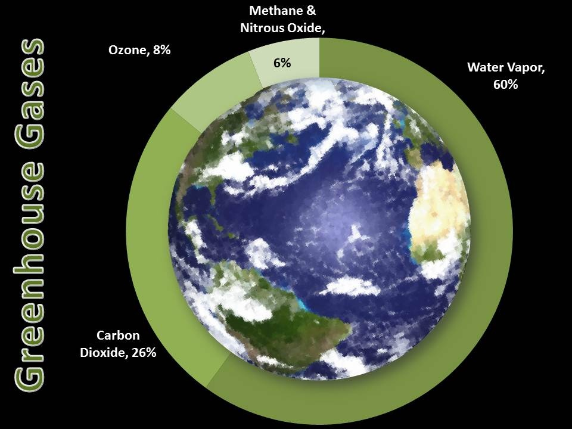
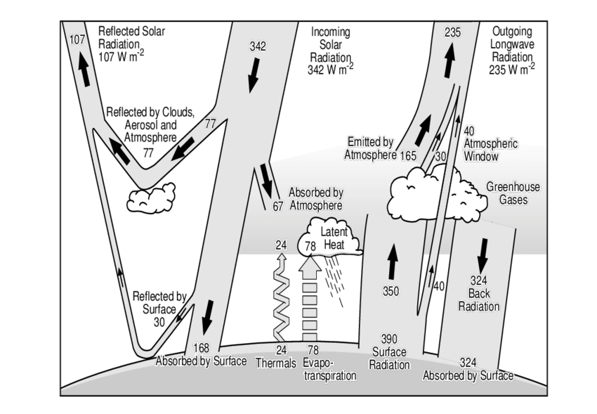

Photo from Galileo of the Earth-Moon system in 1992 (NASA)
Photo taken from Apollo 8 astronauts as they orbited the Moon. (Photo: NASA)
Learning Objectives
Because radiation is the only transfer mechanism between our planet and the Sun / Space we can calculate the theoretical radiation budget of Planet Earth.
Know how to estimate the expected ‘temperature’ of our planet based on our calculation.
Understand how the presence of the atmosphere affects the temperature on our planet.
Review ‘Short-wave’ vs. ‘Long-wave’
Short-wave: \(\lambda <=3 \mu m\)
At 5800 K: \(\lambda\) max is 0.50 \(\mu m\)
Long-wave: \(\lambda >3 \mu m\)
At 288 K: \(\lambda\) max is 10.35 \(\mu m\)
What is the solar constant \(I_0\)? (iClicker)
A The average flux density leaving Sun’s surface
B The average flux density reaching the Earth’s surface
C The average flux density reaching the Earth’s orbit perpendicular to the beam
D The average flux density reaching the Earth’s orbit averaged over the sphere of the planet
Partitioning the Solar Constant
\(I_0 \approx\) 1361 W m-2.
Equilibrium
Earth absorbs incoming \(SW\) from the Sun
Earth emits \(LW\) to Space
These two fluxes can be considered in equilibrium. Why?
\(F_{in}\) = Short-wave
\(F_{out}\) = Long-wave
Planetary Albedo
Not all \(SW\) that reaches a planet from sun is absorbed, a fraction is reflected back to Space.
Planetary albedo \(\alpha\): the % of \(SW\) reflected back to Space
\(\alpha\) is mainly controlled by:
Cloud type/cove
Extent of ice and snow
Earth’s \(\alpha\) = 31%
Planetary Absorption
Transmission through Earth is impossible; \(a = 1 - \alpha\)
Earth’s Albedo: \(\alpha \approx 31\%\)
Atmosphere: 22%
Clouds, droplets, aerosols
Surface: 9%
\(a = 100\% - 31\% = 69\%\)
Atmosphere: 20%
Surface: 49%
Planetary Absorption
Recall the solar constant \(I_0\): the radiant flux density at the top of the atmosphere perpendicular to the solar beam.
\(SW\) Flux into the Earth (\(F_{in}\)) in W is:
\[
F_{in} = A^*(1-\alpha)I_0
\qquad(1)\]
\(I_0\) (W m-2) projected over Earth’s silhouette area (\(A^* = \pi r^{2}\)) in m2
Adjusted for \(\alpha\)
Planetary Emission
Planetary \(LW\) emission (\(F_{out}\)) in W can be approximated as a function of temperature using Stefan-Boltzmann.
I_out = epsilon*sigma*T**4R =6378.1# kmR = R *1000F_out =4*pi*R**2*I_out
The average flux density of \(LW\) at the top of Earth’s atmosphere \(I_{out} \approx\) 234.8 W m-2
The average flux of \(LW\) from Earth \(F_{out} \approx\) 1.2001616^{17} W
Radiative Output (iClicker)
Our estimated value of \(I_{out}\) (234.8 W m-2) \(\neq I_0\) (1361 W m-2).
What accounts for the discrepancy?
A - \(I_0\) is distributed across Earth’s silhouette area \(A^*\); we need distribute \(I_0\) across Earth’s total surface area \(A\)
B - A portion of \(I_0\) is never absorbed by the Earth due to the planetary Albedo (\(\alpha \approx 0.31\))
C - Both A & B
Radiative Output
If we account for both, we’ll get the average flux density at the top of Earth’s Atmosphere across the Full electromagnetic spectrum.
\(\bar{I_0} = \frac{I_0}{4}\) = 340.25 W m-2
\(\bar{I_0}= \bar{I_0} \alpha + I_{out}\) = 105.4775 W m-2 + 234.7725 W m-2
Important greenhouse gases
Table 1: Includes other trace gases (halocarbons, not shown)
Compound
Abundance pre industrial
Abundance 2011
Lifetime yr
Effect of human enhancement
H2O
Variable
Variable
0.03
—
CO2
~280 ppm
393 ppm
5 - 200
1.85 W m-2
CH4
~700
1874 ppb
12
0.51 W m-2
N2O
~270
324 ppb
114
0.18 W m-2
Ozone O3
25 ppm
34 ppm
days
0.35 W m-2
Misc. Trace Gasses
0.34 W m-2 *
All
3.23 W m-2
Test your knowledge (iClicker)
What is the most important greenhouse gas contributing to the natural greenhouse effect on our planet?
A Ozone
B Carbon dioxide
C Methane
D Oxygen
E Water vapour
Test your knowledge
What is the most important greenhouse gas contributing to the natural greenhouse effect on our planet?

A more Realistic Energy Balance

Magnitudes from Kiehl and Trenberth (1997, Bull. Am. Met. Soc.) in IPCC 2001.
There is no net gain or loss for Earth
\(SW\) input (100%) = \(SW\) loss (31%) + \(LW\) (69%):
\(I_{0} = \bar{I_0} \alpha + I_{out}\)
Magnitudes from Kiehl and Trenberth (1997, Bull. Am. Met. Soc.) in IPCC 2001.
Energy Balance of the Atmosphere
The Atmosphere appears to be in radiative deficit
Should be cooling
The surface in radiative surplus
Should be warming
Why is this not happening?
Magnitudes from Kiehl and Trenberth (1997, Bull. Am. Met. Soc.) in IPCC 2001.
Energy Balance of the Atmosphere
Earth’s surplus is convected by sensible and latent heat flux into the Atmosphere
Offsets the radiative imbalance,
i.e. the whole energy balance is involved not just radiation
Magnitudes from Kiehl and Trenberth (1997, Bull. Am. Met. Soc.) in IPCC 2001.
Latent Heat Flux (iClicker)
How is a latent heat flux into the Atmosphere realized?
A - Water is vaporized by radiation at the surface and condenses in clouds - there it warms up air.
B - Radiation absorption at surface warms up air near surface - warm air rises and transports extra heat to higher layers of atmosphere.
C - Rain releases its geopotential energy as raindrops splash at the surface - they warm up the surface more than the atmosphere.
Take home points
The planet is using (absorbing) only 69% of the solar radiation received. The planetary albedo is 31%.
Without atmosphere it would be -16.5579764$° C on Earth on average. The natural greenhouse effect is worth -31.2 K.
The atmosphere is in a radiative deficit and the Planet’s surface shows a radiative surplus. Sensible and latent heat fluxes offset the radiative imbalance, i.e. transport energy from the surface into the atmosphere.